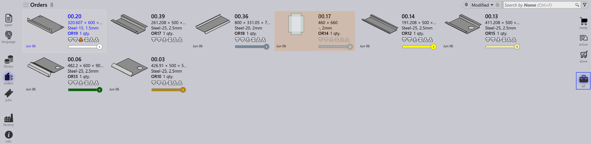
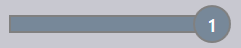

訂單檢視
訂單頁面右側的選項代表基於處理階段的不同訂單檢視。選取檢視會更新顯示的訂單，讓您可以專注於工作流程的特定階段。
Ready
選取 Ready 檢視會顯示已準備好但尚未轉換為作業的訂單。

-
顯示可建立作業的訂單。
-
有助於識別待處理的訂單。
Active
選取 Active 檢視會顯示已轉換為作業且目前正在處理的訂單。

-
代表已移至作業階段的訂單。
-
有助於追蹤正在執行的訂單。
-
有助於監控進行中的生產。
Done
選取 Done 檢視會顯示已完成處理的訂單。

-
顯示相關作業已完成的訂單。
-
表示工作流程已完成。
-
有助於審查和記錄保存。
All
選取 All 檢視會顯示所有訂單，不論其階段為何。

-
提供所有訂單的完整概覽。
-
有助於跨所有階段進行搜尋和管理。
訂單狀態列
每個訂單圖塊下方顯示的狀態列指示訂單是否連結至作業。有兩種類型：
-
無狀態列 - 訂單未指派給任何作業。
-
有狀態列 - 訂單是作業的一部分，狀態列顯示相應的作業狀態，如下所列。
| 訂單狀態 | 說明 |
|---|---|
|
未就緒 |
|
就緒 |
|
Bend Planned |
 |
缺少板材 |
|
折彎隊列 |
|
切割隊列 |
|
完成 |